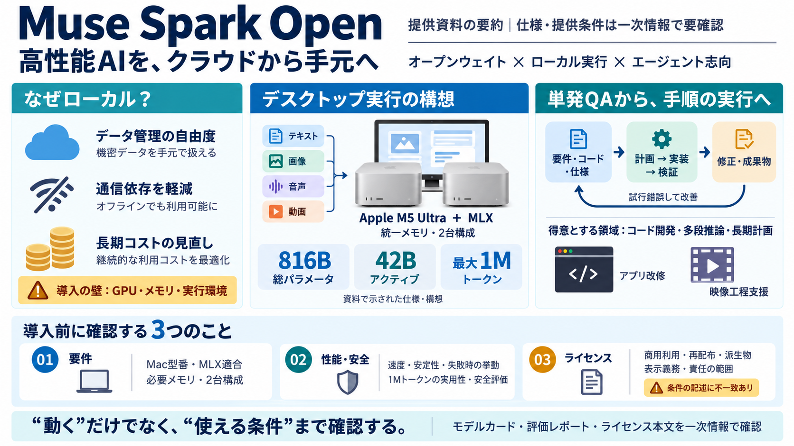

Muse Glimmer Review (2026): 30B Open-Weight Agent Model
License terms are not yet confirmed, so commercial use should not be assumed No public model card or repository was fou…

Meta AIのオープンウェイト型マルチモーダルが、Apple M5 Ultra（MLX）で“ローカル実行”できる方向性を打ち出したリリース要点。
クラウドAIは便利だが、コスト・通信・データ取り扱いがボトルネックになりがちです。そこで「手元の計算資源で動く」モデルが注目されます。
Muse Spark Openは“オープンウェイト”で、重みを自分の環境で推論に使える設計です。加えてMLXとApple M5 Ultraを前面に出し、実装の入口を具体化しています。
総パラメータ816B（うちアクティブ42B）、コンテキスト長最大1Mトークン。コード生成や長い計画が得意という主張が中心です。
統一メモリアーキテクチャでGPU共有メモリを確保し、2台のMac Studioで統合運用する構想が述べられています。例として、iOS変更や映像工程の評価・切り出しが挙げられます。
単発QAより、段階的にタスクを進める“エージェント的”ワークフローを強く意識しています。長い手順・複雑なソフト開発・長期計画の支援が狙いです。
1Mトークンや長い地平は魅力ですが、速度・再現性・失敗モードが“どの条件で”成り立つかは本文だけでは判断しにくいです。用途を選ぶ設計が前提になります。
オープンウェイトに伴うリスクを前提に、リリース要件に沿った安全評価（リスクカテゴリ別、段階的な基準）が言及されています。実際の粒度はモデルカード等の確認が必要です。
提供は「Muse Model License」とされ、商用条件は限定的という整理です。運用・導入可否は、個人利用/研究/商用組み込み/再配布などで変わり得るため条文精読が必須です。
魅力は「ローカルで動く高性能・エージェント志向」。ただし、要件（ハード/ソフト）、評価条件（安全・性能）、そしてライセンスを先に潰すのが安全です。
License terms are not yet confirmed, so commercial use should not be assumed No public model card or repository was fou…
| Evaluation Metric | Muse Glimmer (Open Weight) | Muse Spark (Proprietary Frontier) | --- | Availability | Open-weigh…
Reviewed byJonathan West · Updated Aug 29, 2026 # Muse Spark 1.2 vs GLM 5.2 A closed, two-tier coding model from Meta …
The left panel reproduces Muse Glimmer's published benchmark scores from Meta's model card. The right panels show locall…
The left panel reproduces Muse Glimmer's published benchmark scores from Meta's model card. The right panels show locall…